Weekend Line-up
Preview / work-in-progress shows
Every single show at the festival is a preview or work-in-progress — they may be rough around the edges! There are a couple of shows left to announce. All shows are first come first served, entry to particular shows is not guaranteed (but we do our best to fit people in!) Line-up subject to change.
Phil Wang: The Real Hero in All This
 Hot off the heels of his critically acclaimed Netflix special and his first US tour, Phil's bringing his highly infective British-Malaysian variant of comedy to ARG. Phil's last ARG was bloody years ago, so immunity to his charm has faded significantly. Thank goodness he's back with a new hour of absolute gold about race, family and everything that's been going on in his Philly little life. Your doctor called – you're due your next dose of Wang.
Hot off the heels of his critically acclaimed Netflix special and his first US tour, Phil's bringing his highly infective British-Malaysian variant of comedy to ARG. Phil's last ARG was bloody years ago, so immunity to his charm has faded significantly. Thank goodness he's back with a new hour of absolute gold about race, family and everything that's been going on in his Philly little life. Your doctor called – you're due your next dose of Wang.
“At the top of his game… Inspired work from a comic who just gets better and better" ★★★★★ Time Out
Photo by Matt Stronge.
Isy Suttie: Jackpot
 Isy’s always searching for adventure in life, but now that she’s a mum with a partner who hates surprises, can she still find it? And why does she need it anyway?
Isy’s always searching for adventure in life, but now that she’s a mum with a partner who hates surprises, can she still find it? And why does she need it anyway?
As seen as Dobby in Peep Show, Esther in Shameless and much much more, Isy has been nominated for three British Comedy Awards, won a gold Sony Award, and released her second book last year.
“The perfect concoction of warmth and grit” Independent
Photo by Matt Crockett.
James Acaster: Hecklers Welcome
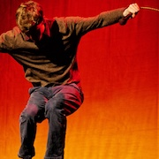
James Acaster has decided to give up control and let the audience do what they want while he tries to tell stories. It's an experiment!
Josie Long: Re-enchantment
 Josie Long is back with a new show about being humane and hoping for better, and also possibly about learning the trumpet and a flyer she saw in 1991. Since her last show she has moved to Scotland, turned 40 and had another baby and would like these to be seen as professional achievements for tax purposes.
Josie Long is back with a new show about being humane and hoping for better, and also possibly about learning the trumpet and a flyer she saw in 1991. Since her last show she has moved to Scotland, turned 40 and had another baby and would like these to be seen as professional achievements for tax purposes.
“Full of love and defiant joy” ★★★★ Guardian
Photo by Matt Crockett.
Kiri Pritchard-McLean: Home Truths
 Kiri Pritchard-McLean is back and a lot has happened over the last few years. She’s moved back to her home island of Anglesey and gotten some rescue chickens. You can expect jokes about skinny jeans, learning Welsh and white supremacy – something for everyone. As seen on Have I Got News For You, Live at the Apollo and Would I Lie to You?
Kiri Pritchard-McLean is back and a lot has happened over the last few years. She’s moved back to her home island of Anglesey and gotten some rescue chickens. You can expect jokes about skinny jeans, learning Welsh and white supremacy – something for everyone. As seen on Have I Got News For You, Live at the Apollo and Would I Lie to You?
“Making powerhouse stand-up from the thorniest of subjects” ★★★★ Guardian
★★★★ List
★★★★ Telegraph
Photo by Drew Forsyth.
Glenn Moore: Will You Still Need Me, Will You Still Feed Me, Glenn I’m Sixty Moore
 “The best showcase of pure joke-writing skill on the Fringe” Guardian
“The best showcase of pure joke-writing skill on the Fringe” Guardian
Edinburgh Comedy Award nominee, and one of the best and most prolific joke-writers of his generation, Glenn Moore really puts in another shift. Mock The Week and The Stand Up Sketch Show regular. As heard on The News Quiz, The Now Show, and sidekick on Absolute Radio's The Dave Berry Breakfast Show. Proud owner of a Pointless Celebrities trophy and House of Games tankard.
★★★★ Guardian
★★★★ Chortle
★★★★ Evening Standard
Photo by Natasha Pszenicki.
Jessica Fostekew: Wench
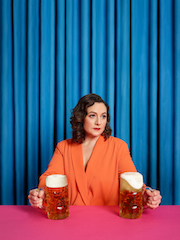
A new show about private things, public things and trying to wrap your big sexy arms around time to keep it still.
You’ve seen Jessica on Live at the Apollo and QI, amongst other telly shows. She’s a regular co-host of The Guilty Feminist Podcast, the host and creator of The Hoovering Podcast and you hear her regularly on BBC Radio 4’s News Quiz and Now Show.
Nominated for the Dave Edinburgh Comedy Award Best Show 2019 with her last show Hench and winner of Best Show and Best Breakthrough Act in the Chortle Awards 2020.
Photo by Matt Stronge.
Nick Helm: What Have We Become?
 As the survivors of a global pandemic crawl from their fortified boltholes and begin to rebuild society - what is left of them and who amongst them dares to lead them to the light?
As the survivors of a global pandemic crawl from their fortified boltholes and begin to rebuild society - what is left of them and who amongst them dares to lead them to the light?
Join critically acclaimed and multi award-winning comedian Nick Helm as he embarks on a show so insightful, so honest, so legitimate that it will fix all of society’s problems and lead the way to a new plane of existence.
This is the future. The future is now.
“A true mastermind” ★★★★★ EdFest Mag
“Terrific” ★★★★ Times
“Triumphant” ★★★★ List
Photo by Edward Moore.
Sophie Duker: Hag
 The sexy baby from Taskmaster is all grown up. Back in 2019 she was a Babybel – round, sweet, pure. Now she's vintage cheddar – extra mature and hiding in your fridge. As seen on Live At The Apollo and literally everywhere else. Hag is her new stand-up show. Deal with it.
The sexy baby from Taskmaster is all grown up. Back in 2019 she was a Babybel – round, sweet, pure. Now she's vintage cheddar – extra mature and hiding in your fridge. As seen on Live At The Apollo and literally everywhere else. Hag is her new stand-up show. Deal with it.
Best Newcomer Nominee, 2019.
“Laugh out-loud funny” ★★★★ Telegraph
“Extremely funny” ★★★★ Scotsman
“Rips through sex and race with relish” Sunday Times
★★★★ Evening Standard
★★★★ Skinny
Photo by Sarah Harry-Isaacs.
Marcus Brigstocke: Absolute Shower
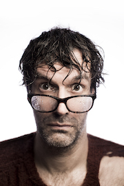
Multi award-winning comedian Marcus brings this blisteringly funny work-in-progress hour of stand-up to ARGComFest.
“Devilishly Funny” TheArtsDesk.com
This joyful show celebrates the personal triumphs and small victories of the past couple of years... while acknowledging it has, in so many ways, on so many days, for the most part, been an absolute shower of shit.
“Charming, hilarious and utterly refreshing. Don't miss this incredible show” Sunday Mirror
Photo by Andy Hollingworth.
Grace Petrie: Butch Ado About Nothing
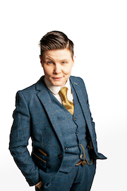
“Whining folk singer,” (Telegraph), lesbian and checked-shirt-collector Grace Petrie has been incorrectly called Sir everyday of her adult life, and, having finally run out of things to write whiny songs about, wonders if there’s a show in that. At 34 in a world of increasingly fraught gender politics, she feels both more and less seen than ever. Join her as she explores butch identity in a world moving beyond labels, and tries to work out where it, and she, belong in the new frontline of queer liberation. Sounds funny, right? Wrong!
Photo by Fraser West.
Ivo Graham: My Future, My Clutter
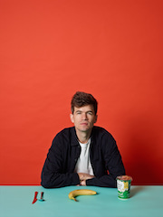
Bumbling wordsmith and tripe factory returns to discuss three years of heavy-duty pranking/parenting/procrastinating since Dave's 2019 nominations for Best Comedy Show and Joke of the Fringe ('I've got an Eton College advent calendar, where all the doors are opened by my father's contacts').
As seen/heard on Mock The Week, Live At The Apollo, Have I Got News For You, British As Folk and was the fondue-set winner on Richard Osman's House of Games.
“A hugely enjoyable hour of stand-up comedy” Times
“Suddenly has star-in-the-making coming off him like steam” Telegraph
Photo by Matt Stronge.
Alison Spittle: WET WIP(e)
Alison loves to do star jumps in the water. She also likes to watch people fight in chip shops. Her two worlds collide as a fight breaks out in aqua-aerobics and she’s never felt so alive.
When the foam settles, Alison realises she’s an outwardly nice person who lives for confrontation.
Host of BBC Sounds Wheel of Misfortune, The Guilty Feminist podcast and writer for Have I Got News For You.
“Alison Spittle is a star she is killing it! Go see her Edinburgh show its sooo good” Maria Bamford
“A kind of genius” ★★★★ Irish Times
“A master class in stand-up comedy” MEG.IE
Photo by Karla Gowlett.
Rob Auton: The Crowd Show
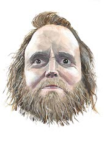
‘The Crowd Show’ is a show about crowds. This is a work in progress of the show. ‘The Crowd Show’ is a show suitable for anybody who has been in a crowd or wants to be in the crowd for this show.
Rob Auton is an award-winning writer, actor and podcaster, named the ‘Brian Cox of Comedy’ by the Guardian. Rob has written eight hit Edinburgh Fringe shows, which have led to nationwide tours and television/radio appearances. Rob has had four collections of poetry and illustrations published by Burning Eye Books and Harper Collins.
Illustration by Rob Auton.
Harriet Kemsley: Honeysuckle Island
Fed up with being told how to look and behave since she was a teenager, Harriet is taking a long hard squint at the beauty industry through her two remaining false eyelashes.
As seen on Live at the Apollo, 8 Out of 10 Cats does Countdown, Hypothetical, Roast Battle, Guessable, As Yet Untitled, Comedy Central at the Comedy Store and Bobby & Harriet Get Married.
“At the dawn of her TV career” Radio Times
“Packs in high calibre jokes” Guardian
“A masterful hour” ★★★★ Skinny
★★★★ Scotsman
★★★★ List
★★★★ Fest
Photo by Matt Crockett.
Colin Hoult: The Death of Anna Mann
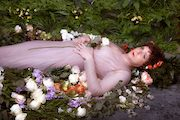
Anna Mann is back! The acclaimed actress, singer and welder (gotta have a back up) returns after five long years to tell the incredible story of her life in the arts in this, her final hour. Visceral, real and achingly brave, Colin Hoult (After Life, Netflix) presents a hilarious meditation on life, death and literally everything in between. You will leave screaming “f*** off I love it!”
“Funnier than almost all other shows at this year's Fringe” ★★★★ Telegraph
“Deliciously funny” ★★★★ Times
★★★★ Scotsman
★★★★ Time Out
Photo by Linda Blacker.
Sara Barron: Hard Feelings
 Star of Live at the Apollo, Would I Lie to You, and Frankie Boyle's New World Order, Edinburgh best newcomer nominee Sara Barron returns with a blistering new hour of standup on smart sex, dumb kids, conception, rejection & wine-in-a-can.
Star of Live at the Apollo, Would I Lie to You, and Frankie Boyle's New World Order, Edinburgh best newcomer nominee Sara Barron returns with a blistering new hour of standup on smart sex, dumb kids, conception, rejection & wine-in-a-can.
“Explosive energy and beautifully crafted, no-nonsense stand-up... a masterful performance. Highly recommended” ★★★★ Sunday Times
“Deliciously dark, brutally honest and unapologetically filthy… a master-class” ★★★★★ Herald
“A wicked, spiky wit in the vein of a young Joan Rivers, Sara Barron is one of America's most exciting comedic exports” ★★★★ Telegraph
“A wickedly funny show” ★★★★ Scotsman
Photo by Matt Stronge.
Rhys James: Attempts
 Rhys James (Little shit from Mock the Week, but also Live At The Apollo and *Celeb* Mastermind to be fair to the boy) turned 31 and now can't get a railcard until he's 60 or done 2 years of military service. That's not all this show is about, but it does come up briefly. In general it's a work-in-progress from "the master of the lightning-paced, gag-dense, precision-delivered set" (Guardian).
Rhys James (Little shit from Mock the Week, but also Live At The Apollo and *Celeb* Mastermind to be fair to the boy) turned 31 and now can't get a railcard until he's 60 or done 2 years of military service. That's not all this show is about, but it does come up briefly. In general it's a work-in-progress from "the master of the lightning-paced, gag-dense, precision-delivered set" (Guardian).
Also, I (Rhys) plan to be quite hench by the time the show rolls around so that could be quite something to behold.
Olga Koch: Just Friends
 Star of Mock the Week, QI, Late Night Mash, Frankie Boyle's New World Order and Edinburgh's Best Newcomer nominee, Olga Koch brings you the rollercoaster romcom you aren't tall enough to ride. Strap in.
Star of Mock the Week, QI, Late Night Mash, Frankie Boyle's New World Order and Edinburgh's Best Newcomer nominee, Olga Koch brings you the rollercoaster romcom you aren't tall enough to ride. Strap in.
Directed by Charlie Dinkin.
“Uproarious, gleefully obscene comedy” Guardian
“One of the most charismatic comedians on the circuit” ★★★★ Telegraph
“A natural storyteller, she will keep you completely hooked” ★★★★★ BroadwayBaby
Photo by Rachel Sherlock.
Jordan Brookes: This Is Just What Happens
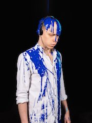
What do you do when the end of the world finally comes and you realise it’s going to happen slowly and boringly? No sudden meteor strike. No thrilling zombie apocalypse. Just a gradual ebbing away of life as you knew it. Do you fight to fix things before it gets worse, dedicating your life to making the world around you better? Nah. You close your curtains, hunker down and fixate over something shitty someone said to you two years ago.
A new show from the 2019 Edinburgh Comedy Award winner.
“He's happier than ever and raring to go” Mirror
Photo by Matt Crockett.
Sofie Hagen: Fat Jokes
Edinburgh Comedy Award winner Sofie Hagen presents Fat Jokes: a show bursting with big jokes and fat punchlines. Sofie Hagen returns to her craft of devastatingly brilliant joke writing and storytelling and has created this collection of fat jokes and unforgettable moments that you can laugh at without feeling like sh*t. Come as you are and enjoy an actual fat person at the top of their game.
★★★★★ Times
★★★★★ Herald
★★★★★ Broadway Baby
★★★★★ ThreeWeeks
Mat Ewins: Danger Money
 The master of straight-shooting, straight-talking, gimmick-free stand-up is back!
The master of straight-shooting, straight-talking, gimmick-free stand-up is back!
“Possibly the most important comic of his generation” ★★★★ Mat Ewins
Not to be missed, different show every night – extra shows cancelled due to precedented demand!
Photo by Paul Gilbey.
Jenny Bede: The First Pregnant Woman in the World
You won’t have had children yet, as Jenny is the first person to ever go through this particular ordeal, but you might be keen to learn a little something about this incredible new process called pregnancy from award winning musical comedian and future nations sweetheart, Jenny Bede.
Jenny will navigate the entire gamut of human emotions, from despair all the way through to despair, as she jokes, sings and (at last, justifiably) Mum-dances her experience to life in this new hour.
“Rising Star” Observer
“Lyrically Genius” Edinburgh Festivals Magazine
Photo by Matt Stronge.
Heidi Regan Gives Birth Live on Stage Every Night or Your Money Back
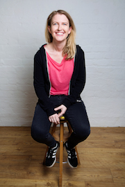
FADE IN: Heidi sits at her desk writing the blurb for this show. She turns to the camera and winks. Her look says it all. We realise, without any words or proof needed, that this is the best show anyone has ever written about moving in with your girlfriend, trying for a baby and some stuff about robots. CUT TO: A BMW roars down the Amalfi coast! Winner of BBC New Comedy Award and So You Think You’re Funny.
Tour support for Joe Lycett and Phil Wang.
Photo by Karla Gowlett.
Andrew O'Neill: We Are Not In the Least Afraid of Ruins; We Carry a New World in Our Hearts
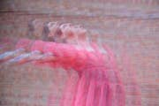
Andrew O'Neill, non-binary whirlwind and star of BBC Radio 4's Damned Andrew brings back the best show they've ever done.
“A huge, sometimes unsung capacity to blow the bloody roof off. Their finest work” ★★★★ Fest
“A sublime set of subversive optimism” ★★★★ List
“Excellent, impassioned flights of fury” ★★★★ Scotsman
Photo by Heartbreaker Photography.
Alex Kealy: Winner Takes All
 The “rising star of the British stand-up scene” (List) explores Silicon Valley tech monopolies, advertising and addiction through his “perfectly expressed gags” (Chortle).
The “rising star of the British stand-up scene” (List) explores Silicon Valley tech monopolies, advertising and addiction through his “perfectly expressed gags” (Chortle).
“A storming show” Sunday Times
Guardian's Top 10 Jokes Edinburgh Festival 2019
“Fresh, insightful, and original...a great hour of cerebral stand-up” ★★★★ FringeGuru
“Excellent… dynamite Interstellar routine which I wish I had written!” Mark Kermode
“Clever comedy…internal damage from laughing so much” ★★★★ Shortcom
“A must-see at the fringe” ★★★★ Broadway Baby
“5 Comedians To See If You Like James Acaster” Edinburgh Evening News
Writer for Mock The Week & The News Quiz
Photo by Edward Moore.
Ania Magliano: Absolutely No Worries If Not
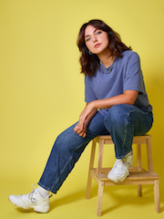
50% Polish, 50% Italian, 100% legend. Ania Magliano’s debut show tackles the stuff that matters: LUSH, horse girls, and buying a cat off Gumtree. Leicester Comedy Festival Best New Show Winner 2022.
Writer for Amelia Dimoldenberg’s Chicken Shop Date. As seen on The Stand Up Sketch Show (ITV2) & Dave Online.
“Already has the cool, calm and collected stage presence of a standup veteran” Guardian
“A finesse usually seen after decades in the game” Diva Mag
Come if you want to, but absolutely no worries if not.
Photo by Matt Stronge.
Garrett Millerick: Just Trying to Help
 The world’s angriest optimist returns for another bash at sorting out life’s inexplicable complications. A showcase of no holds barred stand up comedy for people who like to keep things simple.
The world’s angriest optimist returns for another bash at sorting out life’s inexplicable complications. A showcase of no holds barred stand up comedy for people who like to keep things simple.
Best Show Nominee 2022 - Leicester Comedy Festival
As seen on: Conan, SiriusXM, 800 Pound Gorilla Records, & Laughable (50 Funniest Podcasts of 2021, Guardian).
The Best Shows of Edinburgh 2018 & 2019 - Guardian, Times & Telegraph.
“He’s just fantastic” Frank Skinner
“This brave and winning hour certainly pulls no punches” ★★★★ Times
“wickedly funny” ★★★★ Scotsman
“Powerhouse performance” ★★★★ Telegraph
“a virtuoso display of unforgivingly grumpy stand up delivered with fire in his soul” ★★★★½ Steve Bennett, Chortle
Photo by Matthew Hall.
Tarot: Cautionary Tales
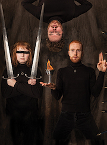
Come learn life lessons from five people still doing sketch in their thirties.
A new show from Tarot, creators of 2019's fifth- best reviewed show, Chortle's No. 1 show of 2019 and stars of their own Radio 4 sketch show, Soundbleed.
Tarot is the lovechild of Goose and Gein's Family Giftshop. By which we mean it's a drain on our bank accounts and we don't talk to our parents about it.
“Bark-out-loud funny... the whole show is startlingly live.” ★★★★ Guardian
“One of the balls-out funniest show of the Fringe.” ★★★★½ Chortle
Photo and artworking by Kayla Wren, design by Suz Hughes.
Rachel Fairburn: Can I Be Awful?
 Brassy, abrasive, rude, belligerent. The four horsemen of the apocalypse? No. They’re all words that have been used to describe Rachel and she’s proper sick of it now. She’s also sick of being told to “be kind” by everyone from bearded hipster men to T-shirts. What’s wrong with saying it how you see it? What really is kindness? Why is Rachel’s “truth” not respected? Why are you all so annoying? Probably because nobody tells you that you are. Let Rachel change that.
Brassy, abrasive, rude, belligerent. The four horsemen of the apocalypse? No. They’re all words that have been used to describe Rachel and she’s proper sick of it now. She’s also sick of being told to “be kind” by everyone from bearded hipster men to T-shirts. What’s wrong with saying it how you see it? What really is kindness? Why is Rachel’s “truth” not respected? Why are you all so annoying? Probably because nobody tells you that you are. Let Rachel change that.
Join the All Killa No Filla co host, as seen on BBC Presents: Stand Up For Live Comedy and Funny Festival Live, part of the BBC’s Festival of Funny. Her TV credit's include Alan Davies: As Yet Untitled and Russell Howard Hour Life Lessons.
“Huge presence in a pint-sized frame” ★★★★ Chortle
“Bright, brave and bitterly enjoyable” ★★★★ Skinny
“Gag-heavy, opinionated and smart” ★★★★ Funny Women
Photo by Tall Guy Pictures.
Sean McLoughlin: So Be It
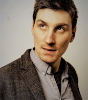
International micro-star Sean McLoughlin returns to the Fringe with his best stand-up show. The world may be a strange and scary place but life is still worth living, yeah? Tour support for Ricky Gervais. Chortle Award nominee. As seen on multiple TV appearances and heard on his two hugely successful US albums.
“A hugely accomplished hour of stand-up” Time Out
“His intellectual and comic brilliance has the audience rapt” Chortle
Photo by Edward Moore.
Helen Bauer: Madam Good Tit
 Helen is basic, well basic-plus because she is self-aware with it. Last year’s Best Newcomer nominee returns with an hour about self-confidence, self-esteem and self-care. It’s the year of ‘self’. Taking care of yourself has never been more ‘in’. Inspirational quotes and facemasks are a big industry and, like all her friends, Helen is trying to ‘be the change she wants to see’. From Live at The Apollo.
Helen is basic, well basic-plus because she is self-aware with it. Last year’s Best Newcomer nominee returns with an hour about self-confidence, self-esteem and self-care. It’s the year of ‘self’. Taking care of yourself has never been more ‘in’. Inspirational quotes and facemasks are a big industry and, like all her friends, Helen is trying to ‘be the change she wants to see’. From Live at The Apollo.
“A personality that will fill a stadium… This girl will not be performing in small venues for much longer” ★★★★★ Sunday Express
Photo by James Deacon.
Jack Barry: Don't Happy Be Worry
 Hot piece of ass Barry rises from the ashes of the pandem to heal your soul like a hearty dose of medicinal magic mushrooms. As seen playing Jack in Feel Good (Netflix), as well as on The Russell Howard Hour (Sky One), This is Going to Hurt (BBC One) and Starstruck (BBC). Writer for Mock the Week, tour support for Mae Martin, Marc Maron, Joe Lycett and James Acaster.
Hot piece of ass Barry rises from the ashes of the pandem to heal your soul like a hearty dose of medicinal magic mushrooms. As seen playing Jack in Feel Good (Netflix), as well as on The Russell Howard Hour (Sky One), This is Going to Hurt (BBC One) and Starstruck (BBC). Writer for Mock the Week, tour support for Mae Martin, Marc Maron, Joe Lycett and James Acaster.
★★★★ Sunday Times
Photo by James Deacon.
Pierre Novellie: Why Can’t I Just Enjoy Things?
Before the plague and WW3 I was a chortling, apple-cheeked blacksmith and now I am a scowling wretch in a tattered cloak. The show is observational comedy for people who think they don’t like observational comedy. A mixture of high-brow and low-brow references from five-star receiving, award-winning, hit-podcasting, Frank Skinner-supporting Pierre Novellie.
“Packed full of belly-laughs” ★★★★★ Metro
“Hilarious” ★★★★ Times
“A stand-up masterclass” ★★★★ List
Co-host of the hit podcast BudPod. As seen on The Mash Report (BBC Two), Stand Up Central (Comedy Central) and as heard on The Now Show.
Photo by Karla Gowlett.
Yuriko Kotani: Work in Progress
Winner of the BBC New Comedy Award and Time Out’s One to Watch, UK-based Japanese comedian Yuriko Kotani is going to tell stories of her experiences and thoughts as a work in progress in her “second language”.
As seen on Russell Howard's Stand Up Central, Pls Like (BBC3), Paul Hollywood Eats Japan (Channel 4) and Mandy series 2 (BBC2).
Her debut show “Somosomo” was Guardian's recommended show, 2Northdown's Top Ten Picks at Edinburgh Fringe and received those reviews:
“A brilliantly performed, well-structured & wonderfully unique set.” ★★★★★ fringebiscuit
“A must-see full of heart, passion and laughs.” ★★★★ Broadway Baby
“A superb show that leaves the audience feeling inspired and hopeful” ★★★★ Wee Review
“...genuinely hilarious and I will never look at the term ‘ish’ in quite the same way again.” ★★★★ Clownster
Photo by Karla Gowlett.
Ciarán Dowd: King Rodolfo
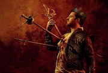
It’s anarchy in the monarchy as renowned swordsman and dumb hussy Don Rodolfo rises from humble peasant to the highest seat in the land. Now, with his enemies at the gates, King Rodolfo looks back on his glorious reign, presiding over one of the most bloody, violent and sexy periods in history.
An epically funny action-adventure and follow-up to the smash-hit Don Rodolfo.
Winner: Edinburgh Comedy Award 2018, Best Newcomer
“The funniest show you will see this year” ★★★★ Telegraph
“A riot from beginning to end... a cult hit” ★★★★★ Chortle
Photo by Idil Sukan.
Sikisa: Twerk In Progress
Sikisa is the life and soul, the hostess-with-the-mostess and the party don't start 'til she walks in. Join her for an epic house party and highly anticipated debut hour. Parties are fun... right? As seen and heard on Jonathan Ross' Comedy Club (ITV), The Stand Up Sketch Show (ITV2) and The Off-Menu podcast. Three-time Leicester Comedy Festival Awards nominee and BBC New Comedy Award Finalist.
“She exudes a lively energy” Chortle
Photo by Swiss Chocolate Pictures / Adrian Tauss.
Sunil Patel: Faster Horses
 “If I had asked people what they wanted they would have said faster horses” (Henry Ford). Mad that he went and invented the car isn't it? Imagine all the people thinking please Henry we just want a faster horse and then he just turns up with an engine on a bed frame going 5mph.
“If I had asked people what they wanted they would have said faster horses” (Henry Ford). Mad that he went and invented the car isn't it? Imagine all the people thinking please Henry we just want a faster horse and then he just turns up with an engine on a bed frame going 5mph.
Anyway, I'm riding in with some faster horses, give the people what they want I say. As seen on This Time with Alan Partridge (BBC), Stath Lets Flats (Channel 4) and Jonathan Ross' Comedy Club
Photo by James Deacon.
Sian Davies: About Time
Best Debut show Leicester Comedy Festival 2020 and Funny Women runner-up. Sian was 27 when she grew up; it was About Time.
“A cross between Peter Kay and Zoe Lyons” BeyondTheJoke.co.uk
About time, growing up and finding your place in the world. A metamorphic year of adventure, travel and trouble. From Tesco to the Taj Mahal, Sian experienced it all whilst tackling some important questions. Like how do you use a squat toilet? What is Free Food Friday? And can you really have a gap year if you're working class?
Photo by Andy Hollingworth.
Joz Norris: Blink
 Legendary magician Joz Norris has perfected the hardest magic trick of all time — making an entire audience think and blink in unison. He's got everything under control this time. Nothing can possibly go wrong.
Legendary magician Joz Norris has perfected the hardest magic trick of all time — making an entire audience think and blink in unison. He's got everything under control this time. Nothing can possibly go wrong.
“Joyously silly” Evening Standard
“A sort of absurdist Simon Amstell... He really does capture the spirit of creative live comedy” Guardian
Winner of The Comedians' Choice Award for Best Show, 2019.
Writer and star of the BBC Radio 4 sitcom The Dream Factory.
Sold out run in 2019.
Co-starring Edinburgh Comedy Award nominee Ben Target.
Photo by Miranda Holms.
Celya AB: Swimming
The debut solo show from one of the circuit’s emerging stars.
Moving from a small town outside of Paris to live in Birmingham, to finding her place in the world — and crucially, learning to swim at the age of 25. Tour support for Maria Bamford and St Vincent.
As seen on The BBC New Comedy Awards Final; Yesterday, Today and the Day Before (Comedy Central); Festival Funny Live (BBC), and heard on The Guilty Feminist.
“Sharp and annoyingly observant gags.” Joe Lycett
“Great jokes, a strong comic. Both classy and funny. A thoroughly engaging presence and very promising writer. Strong stuff.” Steve Bennett, Chortle
Photo by Rachel Sherlock.
Leo Reich: Literally Who Cares?!
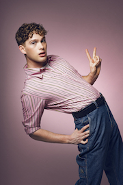
At long last, self-diagnosed important young mind Leo Reich is ready to share some of his notoriously perfect opinions with the community at large. Faced with the swirling uncertainty of our collective future, Leo will ask the big questions such as “Am I hot?”, “Is this helping?” and “No offence guys but literally what is going on?”. Join this insufferable hunk as he pushes the very boundaries of what is considered "funny and good comedy".
Tour support for Simon Amstell; as seen on E4, Comedy Central, ITV1 and Dave.
Photo by Matt Crockett.
Rajiv Karia: Gallivant
Rising star Rajiv Karia wants to be your friend. You really should support your friends, especially when they are doing their highly anticipated debut hour. As seen on Lazy Susan (BBC Three) and Comedy Central Live. Speaking gently and joking hard. Writer for Have I Got News For You and The Now Show. Tour Support for Olga Koch.
“Dry wit akin to Jack Dee or Romesh Ranganathan” VoiceMag.uk
“The gem of the night” InterMissionBristol.co.uk
Photo by Matt Stronge.
Erika Ehler: Femcel
Noun: A female incel. A woman who can't get a relationship. Fresh from appearances on Frankie Boyle's New World Order (BBC2) and Comedians Giving Lectures (Dave). Expect an hour of boldly offensive and immaculately crafted jokes.
Photo by Matt Crockett.
Nic Sampson: Marathon, 1904
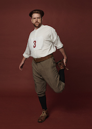
32 athletes entered the 1904 Olympic marathon in St Louis, Missouri. Only 14 finished... What happened in between was a perfect storm of stupidity, cheating, raw eggs, wild dogs and rat poison. New Zealand comedian Nic Sampson brings to life the incredible true story of one of the dumbest sporting events of all time.
Co-writer of Starstruck (BBC Three). Star of The Brokenwood Mysteries (UKTV).
“A world-class hour from one of the country's best performers. It's essential” Stuff
“A beautiful gem of comedic goodness” Three
Winner: NZ International Comedy Festival Best Newcomer.
Photo by Darren Skene.
Cerys Bradley: Sportsperson
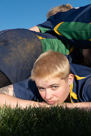
Sportsperson is written and performed by Cerys Bradley (Soho Theatre Young Company, Amused Moose semi-finalist 2020). It's a show about playing sport and fitting in and how Cerys is quite bad at both of those things. It's also a show about being non-binary, embarrassed about wearing lycra and how spending your childhood in a car whilst your parents watch your brother play football (and rugby and tennis and cricket) definitely doesn't leave you with a massive chip on your shoulder. As seen on BBC Wales.
“Slick and quick-witted” DIVA
Photo by Miranda Holms.
Lara Ricote: GRL/LATNX/DEF
Lara's a small Latin American girl (woman?) who won the Funny Women 2021 (right, “woman”) Stage Award and is now doing her first hour about what it's like to be Latin and deaf and a girl who's now a woman at the same time. You know, minority jokes for majority crowds. If you read this and you don't come, what's that say about you? Huh? You hate disabled people? Maybe come and prove you don't! Love you. As seen on E4, Comedy Central and Dave.
“One word for Lara Ricote: Wow!... An electric presence” ★★★★ Chortle
Jo Griffin: People Person
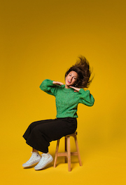
Everyone ok? Everyone happy with their life choices? Everyone with high self esteem and without regrets? Great! Well get cosy with good girl Jo and together we’ll crack the meaning of life.
Jo is one half of critically acclaimed sketch duo Lola & Jo:
★★★★ Chortle
★★★★ List
★★★★ Fest
“Comedy duos you need to see” Independent
Guardian recommended show Edinburgh Fringe 2019
As seen in Christopher Bliss: I Spy With My Little Eye Something Beginning With Why Have You Been Sleeping With My Wife (Soho Theatre) and Mister Winner with Spencer Jones (BBC 2).
Photo by Rebecca Need-Menear.
Every single show at the festival is a preview or work-in-progress — they may be rough around the edges! There are a couple of shows left to announce. All shows are first come first served, entry to particular shows is not guaranteed (but we do our best to fit people in!) Line-up subject to change.
Hosts
This year's hosts include:
- Joe Sutherland: comedian and pro-bono Greggs brand ambassador. Recent telly appearances include Hypothetical (Dave) and Eastenders (you know the one). “A gem to watch” Ed Fest mag
- Annie McGrath: “Dark and hilarious” ★★★★★ Feminist Fringe
- Ian Smith: “A riot of sprightly silliness” Chortle
- Rose Johnson: “Superb… Confident confessional delivery of strongly relatable material” ★★★★ What’s On London
- Stuart Laws: “You'll struggle to find a comedian with a better jokes per minute rate … like a one-man episode of Arrested Development” Fest
- Kat Bond: The Funny Women Comedy Writing Award Winner 2022. “Off-beat brilliance” ★★★★ Times
- Helen Duff: “bold, subversive and very funny” ★★★★ Scotsman
- Ben Pope: “a total delight” Fest
- Lulu Popplewell: As seen and heard on BBC1 and Radio 4. “Sharp, witty… simply hilarious” Varsity
- Richard Sandling: an award winning stand-up comedian and actor and is the writer/director/star of the sci fi comedy feature film PHASE. “Expect big laughs” Guardian
- Bronwyn Sweeney: Funny Women Runner Up 2021, Bronwyn Sweeney is a child of the world with a default American accent. By day she works in advertising and draws on her experiences of making ads that no one wants to watch to inspire her comedy.
- Nathaniel Metcalfe: “delightfully silly” Time Out